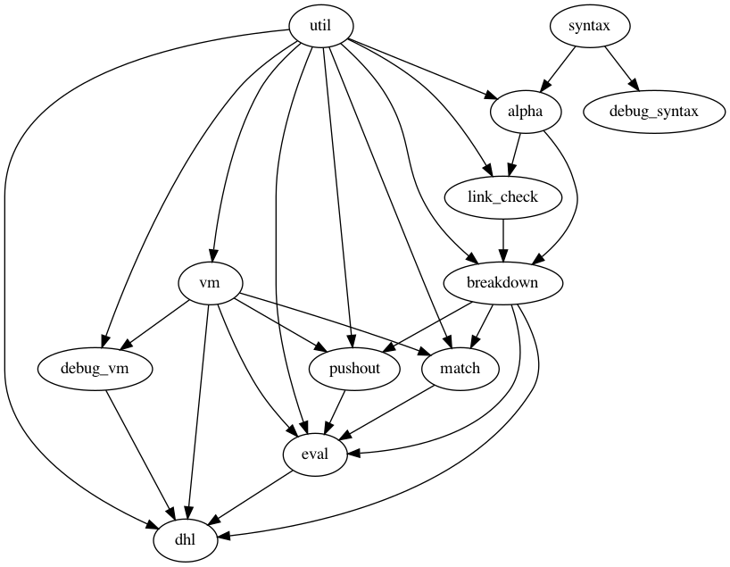

DHL in OCaml
A minimal interpreter of a language based on graph rewriting
Table of Contents
1 About
A minimal implementation of a graph rewriting language Directed HyperLMNtal.
1.1 Getting Started
1.1.1 Prerequisites
1.1.2 Installation
git clone https://github.com/sano-jin/dhl-in-ocaml cd dhl-in-ocaml opam install . dune build
1.2 Usage
dune exec dhl -- example/append.dhl
2 実装の概要
500 LOC 程度の非常に小さいプログラムである （ことを目指している）
2.1 LOC
------------------------------------------------------------------------------- File blank comment code ------------------------------------------------------------------------------- match.ml 15 20 86 vm.ml 22 23 81 util.ml 25 2 60 parser.mly 20 12 59 pushout.ml 4 2 52 breakdown.ml 18 18 51 dhl.ml 7 7 39 link_check.ml 16 11 39 alpha.ml 14 11 34 lexer.mll 10 8 34 eval.ml 5 4 13 syntax.ml 2 3 9 ------------------------------------------------------------------------------- SUM: 158 121 557 -------------------------------------------------------------------------------
2.2 Dependencies

2.3 Source programs
2.3.1 Utility functions
- util.ml
- Some utility functions
2.3.2 Compiler
- Lexical/Syntax analysis
- syntax.ml
- The abstract syntax definition
- lexer.mll
- Defines a token for lexing
- parser.mly
- Defines a grammar for parsing
- Semantic analysis
- alpha.ml
- Convert local link names to fresh ids and partition atoms and rules
- link_check.ml
- Collect link information and check them
- breakdown.ml
- Check rule conditions and break down atoms
2.3.3 VM
- vm.ml
- Type definition of an atom and pretty printer for its multi-set
- match.m
- Perform graph pattern matching
- pushout.ml
- Generate and push atoms
- eval.ml
- The one step reducer
2.3.4 Repl
- main.ml
- File loader and the main execution loop
3 アトムのメモリ管理に関して
性能を出すためには，局所リンクでマッチしたアトムや Indirection アトム （自由リンクでマッチしてシンボルアトムを置き換える）を毎回アトムリストから削除するよりも， Void アトムで更新して，マッチングの際にアトムリストからトラバースする時にアトムリストから取り除き， メモリ領域を解放してやる方が良いかもしれない
現状の方針
- Indirection アトムはアトムリストに登録しない
- 局所リンクでマッチしたアトムは毎回アトムリストから除去する
3.1 アトムが持つべき情報
3.1.1 シンボルアトムの持つべき情報
- アトム名
- 引数のリンク（ポインタ）を m 本
- 他のアトムからの被参照数
- アトムリストからの参照はカウントしない
- アトムリストからは常に辿れるはず（べき）なので
3.1.2 Indirection アトムの持つべき情報
- 引数のリンクを一本（ポインタ）
- 他のアトムからの被参照数
- アトムリストからは参照されない前提
- 他のアトムが（他のアトムを参照しようとして間接的に）参照している場合は， この Indirection アトムは消去できない
- Indirection アトムは他のシンボルアトムからの被参照数がゼロの場合はそもそも生成しない
- 従って，（Indirection アトムの）被参照数はシンボルアトムからの参照数と等価？
- アトムリストにも登録しない？
3.2 トラバースに関して
3.2.1 アトムリストの参照から辿り始めた場合
- 必ずシンボルアトムを dereference するべき
- Indirection アトムはアトムリストに登録しないので
3.2.2 アトムの引数のリンク（ポインタ）から辿り始めた場合
- 参照先がシンボルアトムなら普通にマッチする
- 参照先が Indirection アトムだったらその先を辿る
- Indirection アトムの被参照数を1減らす
- アトムの引数からの参照の分
- これで Indirection アトムの被参照数がゼロになったらメモリを解放
- Indirection アトムを辿っているうちに普通のアトムに辿り着いたら
- そのアトムへの参照で元のアトムの引数を更新する
- Indirection アトムを辿っているうちに自分自身に辿り着くということはあるか？
（Indirection のみでループしうるか？）
- 設計が正しければ，そんなことは起きない
- アトムの引数からは必ずアトムが一つ辿れるはずなので
- Indirection アトムの被参照数を1減らす
3.3 Push に関して
- 被参照数がゼロになるような Indirection はそもそも生成しない
- Indirection の左辺の自由リンクは局所リンクでマッチしたアトムと同じく，
アトムリストから除去する
- 従って，Indirection アトムはアトムリストに登録されない
- 従って，アトムの参照カウンタはシンボルアトムからの（間接参照も含む）参照数とアトムリストからの参照の分
の和よりも大きくなることはない
- つまり，参照カウンタの値がゼロになったら破棄して良い（それ以外に参照しているものはいないことが保証される）